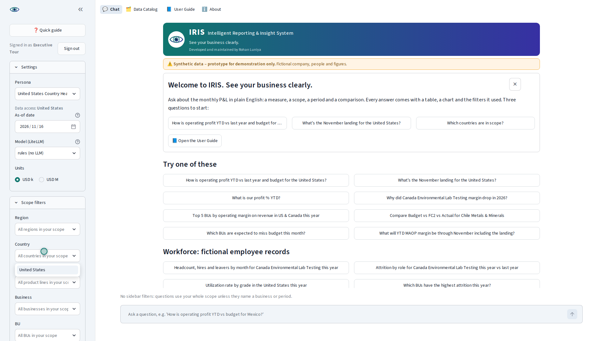
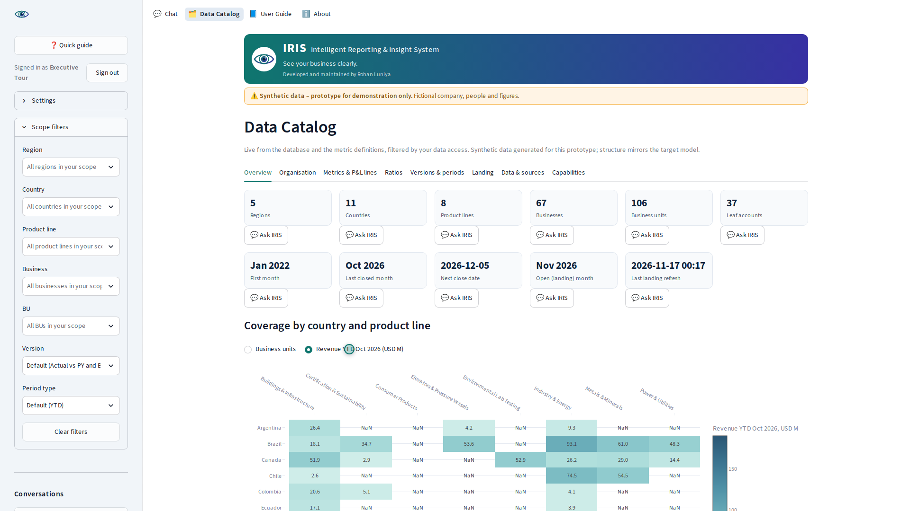
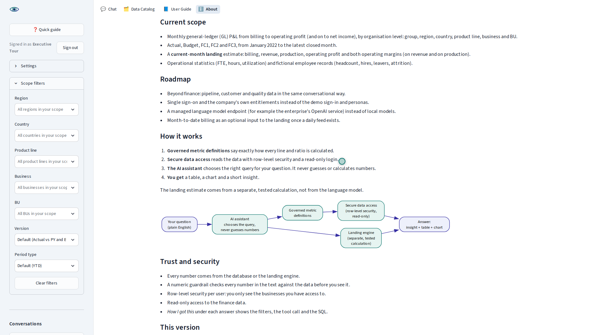
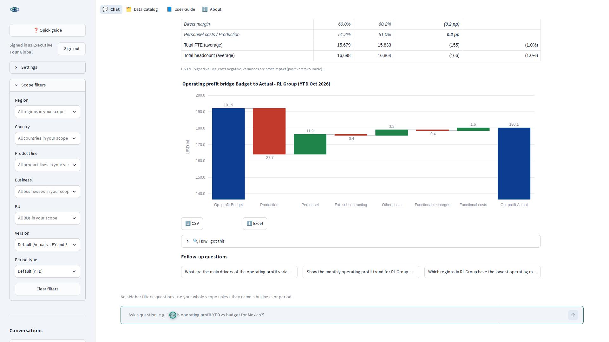
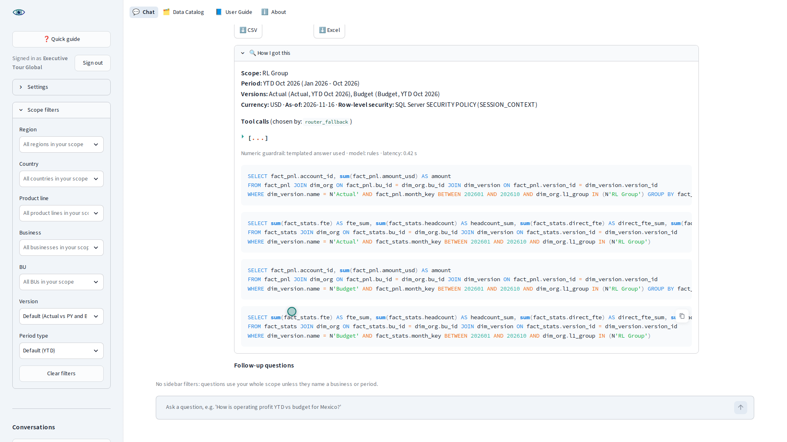
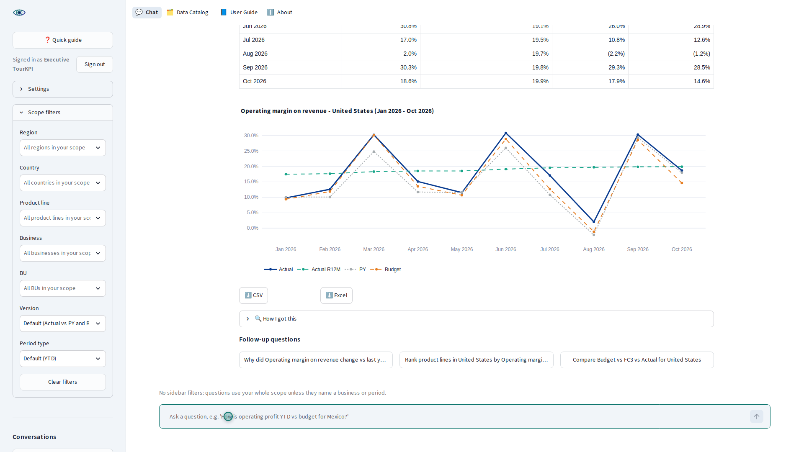
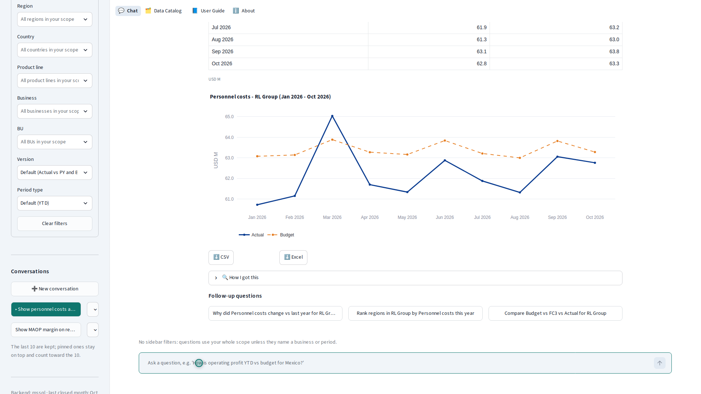
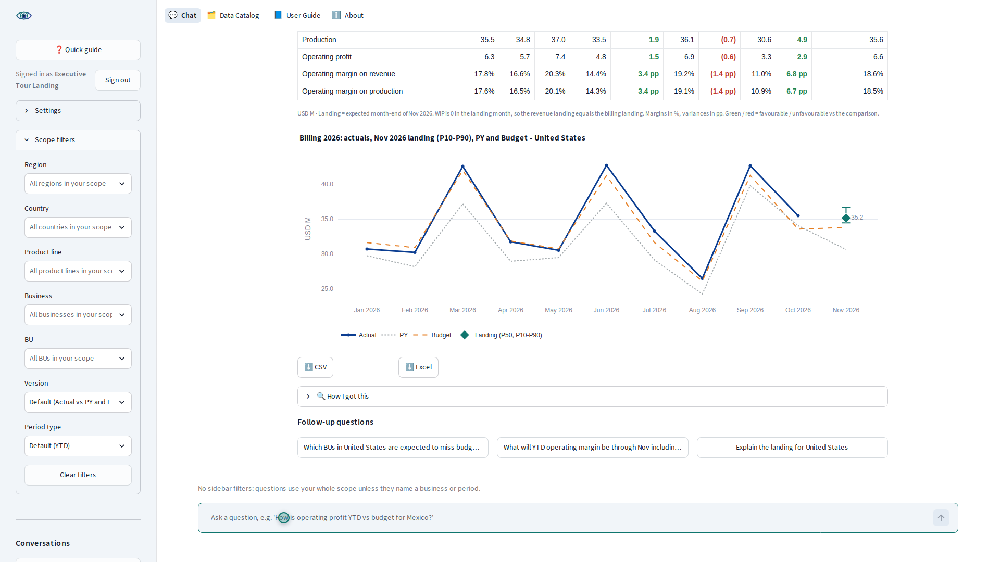
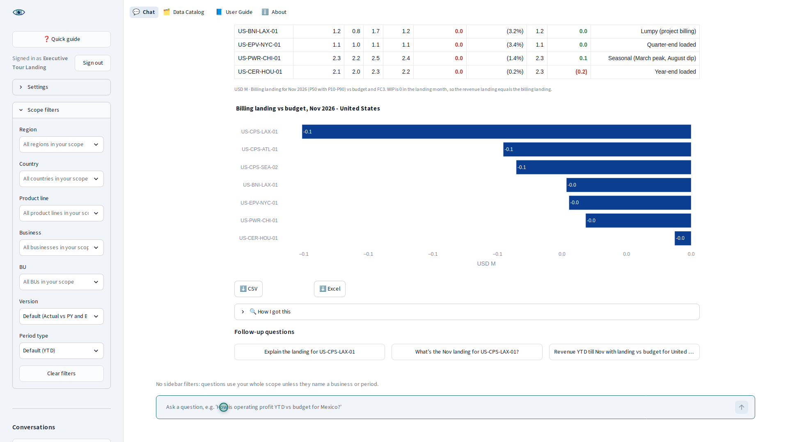

Introducing IRIS — our organization's first interactive AI analytics prototype, showing how iterative investment in Medallion Data Engineering (Bronze → Silver → Gold) and a Governed BI Semantic Layer extends our Power BI, Tableau & Excel ecosystem into trusted, self-service conversational intelligence.
SESSION_CONTEXT) and the Semantic Layer—a US Country Head only sees US orgs and rows.FC1/FC2/FC3) automatically.Region → Country → Product Line → Business → BU, Version, and Period—words in a question intelligently override sidebar defaults.
5A1 or regional cost-center IDs—LLMs guess wrong joins and invent meanings.SUM(Operating Profit) / SUM(Revenue), or flipping debit/credit variance signs.I / U / D), batch IDs & load timestamps+ rev / − cost)dim_org (106 BUs), dim_account (57), dim_period, dim_version, dim_employeefact_pnl (leaf-only), fact_stats, fact_employee_month, fact_landingv_pnl, v_org, v_stats, v_employee)metrics.yaml (21 ratios, P&L trees, synonyms)Incremental CDC captures GL journal postings, HR roster events, and forecast locks without heavy full-table reloads. Strict close-calendar logic (5th of following month; FC1 = 4+8, FC2 = 8+4, FC3 = 9+3) ensures Actuals never bleed into unclosed periods.
dim_org carries SCD2 validity windows across 6 hierarchy levels (Group → Region → Country → Product Line → Business → BU), and employee records track monthly BU assignments, hires, and voluntary vs. restructuring exits—preserving true like-for-like history.
Cryptic ERP codes and inconsistent regional labels are cleaned in Gold/Semantic into globally standardized names (e.g., Operating margin on revenue, Operating margin on production), while business synonyms (MAOP, MOP, payroll) resolve seamlessly.
Gold fact_pnl stores strictly leaf accounts in signed constant-budget USD. Every subtotal, bridge, and ratio is aggregated dynamically from leaves and verified by reconcile.py across 300 automated cross-table checks (0 mismatches).
dim_org flattens L1 Group → L6 BU in one table; dim_account flattens P&L groups and sign flags around fact_pnl and fact_stats.SUM(num) / SUM(den).app_user → user_org_access → dim_org resolves arbitrary multi-level RLS grants cleanly.v_pnl leaf-to-subtotal rollup mappings, dim_calendar → working_days → dim_period country calendars, and fact_landing → landing_bu_profile ensemble metadata.Revenue YTD Oct 2026 (USD M).Ask IRIS.

USD 180.1M Actual vs USD 191.9M Budget with an automated Waterfall Bridge.US & Canada USD 89.5M, BPU USD 41.6M...) with a horizontal bar chart.

SUM(OP) / SUM(Revenue)).Actual (18.6% Oct), Actual R12M (19.9%), PY (17.9%), and Budget (14.6%) across Jan–Oct 2026.USD 621.9M Actual vs USD 633.7M Budget (USD 11.9M / 1.9% favourable) with instant CSV/Excel export.

P50 expected finish at USD 35.2M (P10–P90 band USD 34.5M–36.7M) vs USD 33.8M Budget (+USD 1.4M favourable).7 of 16 BUs before month-end close.

| Consumption Channel | How It Uses Our Gold + BI Semantic Layer | User Value Unlocked |
|---|---|---|
| IRIS Conversational AI | Reads Star/Snowflake semantic views + metrics.yaml + RLS policies; numeric guardrail verifies output |
Executives & managers ask ad-hoc questions, drill into drivers, and build presentation stories in seconds |
| Power BI / Tableau | Connects directly to Gold Star Schema (fact_pnl, dim_org, dim_account, dim_period) |
Zero duplicated DAX/calculated-field drift; standardized global KPI names match IRIS 100% |
| Excel / Connected Sheets | Queries flattened reporting views (v_pnl, v_stats) under database row-level security |
Controllers run pivot analyses on live governed numbers instead of offline CSV snapshots |
| Automated Landing Engine | Scheduled batch over Silver/Gold history + country working-day calendars writes fact_landing |
Proactive mid-month P10–P90 landing visibility across all 106 Business Units |
135 golden finance & multi-turn evaluation tests, 230+ automated unit/UI tests, 300/300 P&L reconciliations, and 100% RLS enforcement.
Plug CDC Bronze/Silver/Gold pipelines into enterprise ERP & HRIS, map SSO entitlements to user_org_access, and connect enterprise OpenAI / Copilot endpoint.
Extend the exact same Medallion + BI Semantic pattern beyond Finance P&L to Commercial Pipeline, Customer Quality, and Working Capital.